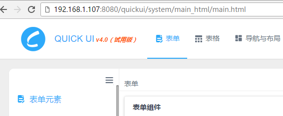
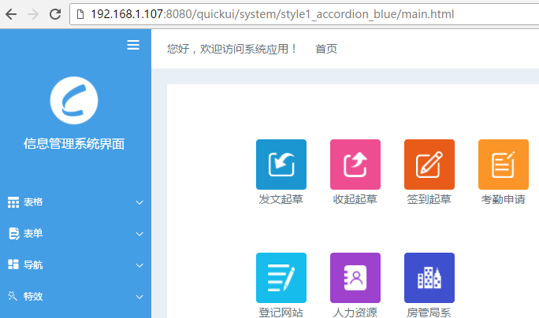
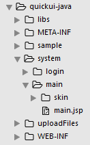

快速上手
使用之前
QUICK UI 4.0是基于jquery1.9开发。在开始使用 QUICK UI 之前，有必要先了解jquery的基础知识。我们假定您已经基本掌握QUIERY的用法，包括初始化函数、使用选择器选择DOM节点和设置与读取自定义属性等知识。
运行HTML示例工程
你需要架设服务器，通过http的方式访问demo工程。比如tomcat等。
当你拿到QUICK UI的试用版或者购买了正式版后，从软件包中找到“组件示例工程”文件夹，把里面的quickui目录拷贝到服务器相应目录，然后通过http的方式访问quickui/system/main_html/main.html

如果你的开发编辑器本身就有http预览环境（比如Hbuilder），也可以直接把quickui目录拖到编辑器中，直接运行quickui/system/main_html/main.html
使用QUICK UI皮肤包
QUICK UI有皮肤包的概念，每一套皮肤包都有独立的主页文件、导航处理和CSS样式等，所有的皮肤包共用组件库资源，来实现QUICK UI风格样式的千变万化。关于皮肤包详细内容见“框架”栏目的皮肤相关章节。
皮肤包使用方式：将皮肤包文件夹放到quickui/system目录下，像访问示例工程主页文件一样访问皮肤包里面的main.html

搭建工程开发
你需要先选择一套适合你的框架皮肤包作为项目入口。选择皮肤包可以访问官网预览效果，官网的每一套皮肤中会显示皮肤名称，该名称与皮肤包文件夹名字保持一致。也可以通过在本地访问皮肤包的方式一个个查看。
当创建了工程后，在工程根目录新建system目录，皮肤包放到system目录中。从“组件示例工程”文件夹中找到libs文件夹。libs是QUICK UI组件库，也同样放到你的工程根目录。然后访问该皮肤的主页文件作为你的项目主页。

如果希望更改皮肤包名称，或者更改目录结构，需要修改皮肤主页的配置参数。如果你无法正常访问皮肤包主页，说明路径出了问题，同样需要修改皮肤主页的配置参数。详细内容见“框架”栏目的皮肤相关章节。